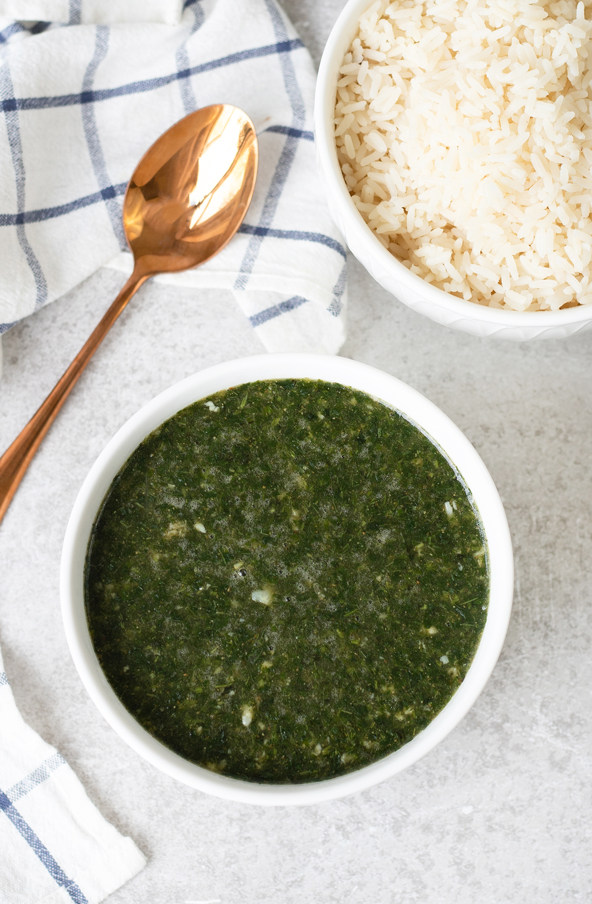

Description:
Molokhia is a green leafy soup popular in Egypt made from finely chopped jute leaves cooked in flavorful broth with garlic and coriander, usually served with rice and chicken.
Ingrediants:
- Fresh or dried molokhia leaves
- Chicken (breast or thighs)
- Garlic
- Coriander
- Onion
- Bay leaves
- Olive oil or butter
- Salt and pepper
- Lemon juice (optional)
Steps:
- Boil chicken with onion and bay leaves to make broth.
- Roast or sauté garlic and coriander in oil/butter.
- Add chopped molokhia to broth and cook.
- Mix in sautéed garlic mixture and season well.
- Add shredded chicken back to soup. Serve with rice.